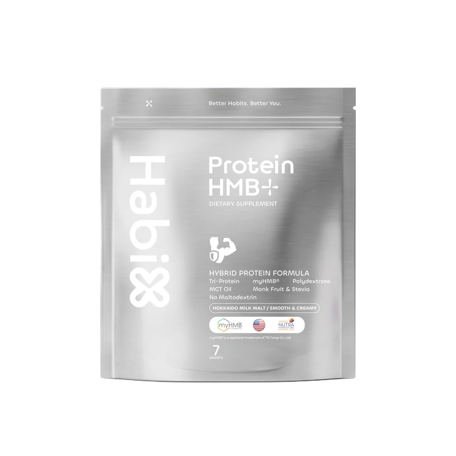

RoutineX · B / Build
จากสิ่งที่กินไปสู่สิ่งที่ยังอยากทำ
ตามสารอาหารเล็ก ๆ ไปดูงานสร้างที่เกิดขึ้นภายในคุณ
โปรตีนในมื้ออาหารเดินทางต่อในรูปที่เล็กลง
โปรตีนถูกย่อยเป็นกรดอะมิโน ก่อนดูดซึมผ่านลำไส้เล็กเข้าสู่ร่างกาย
ชิ้นเล็ก ๆที่ร่างกายนำไปสร้างต่อ
เซลล์นำกรดอะมิโนมาประกอบเป็นโปรตีน รวมถึงโปรตีนที่เป็นส่วนหนึ่งของกล้ามเนื้อ
ข้างในคุณมีงานสร้างอยู่เสมอ
ภาพอธิบายแบบย่อ ทั้งขนาดและเวลา
สร้างขึ้นสลายลงสร้างใหม่
โปรตีนในกล้ามเนื้อมีการสร้างและสลายอยู่ตลอด กรดอะมิโนบางส่วนกลับมาใช้ได้อีก
ดูแลสมดุลของงานที่ไม่เคยหยุด
การกิน การเคลื่อนไหว อายุ และภาวะร่างกาย ล้วนเกี่ยวข้องกับสมดุลนี้
กินให้พอใช้กล้ามเนื้อให้เวลาพักฟื้น
อาหารและพลังงานที่เพียงพอ ร่วมกับการฝึกแรงต้าน เป็นฐานของการดูแลกล้ามเนื้อ
อาหารโปรตีนหาได้จากอาหาร เช่น ปลา ไข่ นม เต้าหู้ และถั่ว เลือกให้เหมาะกับมื้อและตัวเรา
แรงต้านกล้ามเนื้อตอบสนองต่อการใช้งานที่มีแรงต้าน ค่อย ๆ ฝึกให้เหมาะกับกำลังของตัวเอง
พักฟื้นจัดเวลาให้ร่างกายพักและฟื้นตัว เพื่อให้รูทีนที่ทำอยู่ไปต่อได้
A closer look · HMB
แล้ว HMBอยู่ตรงไหนในเรื่องนี้?
HMB เป็นสารที่เกิดจากกระบวนการเปลี่ยนแปลงของลิวซีน ซึ่งเป็นกรดอะมิโนชนิดหนึ่ง
อีกบทบาทที่นักวิจัยกำลังศึกษา
มีงานศึกษา HMB กับการสร้างและสลายโปรตีนในกล้ามเนื้อ ผลที่พบต่างกันตามกลุ่มคน ปริมาณ และเงื่อนไขการศึกษา
เป็นส่วนเสริมของการดูแล ไม่แทนอาหารหรือการออกกำลังกาย
ทั้งหมดนี้อยู่เบื้องหลังการเคลื่อนไหวของคุณ
- ลุกขึ้น
- หยิบแก้ว
- ออกไปใช้ชีวิต
การดูแลกล้ามเนื้อ คือการดูแลความสามารถที่เราใช้ในทุกวัน
เริ่มจากสิ่งที่ทำซ้ำได้
อาหารที่เหมาะกับเรา การใช้กล้ามเนื้อ และรูทีนที่ทำต่อได้

หนึ่งทางเลือกที่เราใช้
Protein HMB+
โปรตีน 20 กรัม พร้อม myHMB® 750 มก. ต่อซอง รส Hokkaido Milk Malt
นี่เป็นตัวที่เราเลือกดื่ม คุณเลือกเริ่มจากอาหารหรือวิธีที่เหมาะกับตัวเองได้
เข้าใจข้างในแล้วดูแลในแบบของคุณ
ผลิตภัณฑ์เสริมอาหาร ไม่มีผลในการป้องกันหรือรักษาโรค โปรดอ่านฉลากก่อนบริโภค